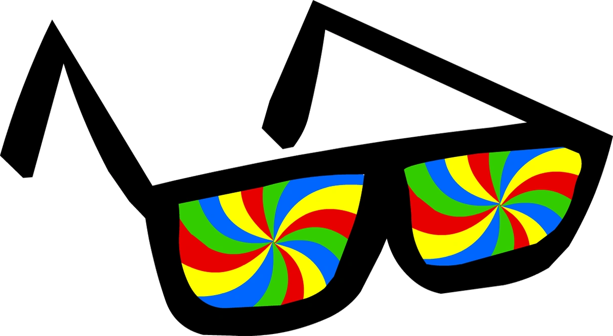
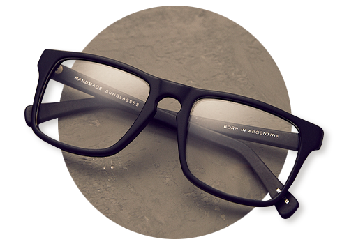
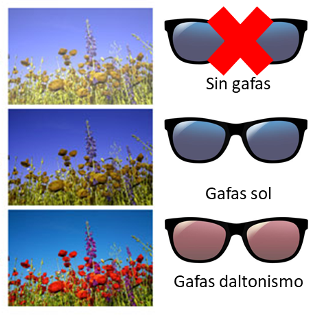

El daltonismo heredado
No tiene cura hasta el momento. Sin embargo, para algunos con formas leves de daltonismo que confunden el rojo con el verde, las gafas para daltonismo especialmente formuladas podrían mejorar el contraste entre algunos colores. Los resultados varían según el tipo y grado de daltonismo de la persona.
¿Se puede corregir el daltonismo con gafas?
-El Dr. Ivan Schwab, profesor de oftalmología de la Universidad de California, en Davis, explica que las gafas cambian lo que ven las personas que los usan, mejorando así la diferenciación entre el rojo y el verde. No obstante, la experiencia puede variar ampliamente de una persona a otra y las gafas correctoras de daltonismo no ofrecen un verdadero equivalente de la visión de color natural.
-El daltonismo genético es producido por una ausencia o un problema de la función de uno o más de los tres tipos de conos fotorreceptores sensibles al color en la retina. Quienes tienen dificultad para diferenciar la luz verde (deuteranomalía) o la luz roja (protanomalía) experimentan una superposición entre algunas longitudes de onda de luz que el cerebro interpreta como rojo o verde.
-Según explica el Dr. Schwab, profesor de oftalmología de la Universidad de California, en Davis, "Las gafas para daltonismo están fabricadas con ciertos minerales que absorben y filtran algunas de las longitudes de onda entre el verde y el rojo que podrían confundir al cerebro".
-Según el Dr. Schwab, parte de la luz que pasa a través de las gafas queda bloqueada de manera que las longitudes de onda de la luz roja y verde ya no se superponen en la misma medida. Co menos superposición de color, el cerebro tiene una señal más clara que ayuda a diferenciar entre estos colores. Uno de los tipos más populares de estas gafas es fabricado por EnChroma.
-Las gafas para corrección de color no cambian la percepción de color para aquellos cuya deficiencia se debe a una ausencia total de fotorreceptores rojos o verdes. Y el efecto positivo de las gafas sólo se obtiene mientras se estén usando. Las gafas no modifican de forma alguna los fotorreceptores de una persona, sus nervios ópticos ni su contexto visual para fijar el color.
-"La percepción de color requiere una serie completa de funciones óptimas, y las gafas no reemplazan ni reparan los mecanismos faltantes o dañados", sostiene el Dr. Schwab.


Tres cosas que debe saber antes de comprar gafas para daltonismo:
-Las gafas para daltonismo pueden empeorar la visión nocturna. Debido a que estas gafas reducen la cantidad de luz que entra al ojo, puede no ser buena idea utilizarlas en la noche. Al reducir la cantidad de luz que entra al ojo, quienes tienen otras afecciones como cataratas o degeneración macular pueden tener problemas. El fabricante, EnChroma, advierte que no conviene utilizar estas gafas para conducir. La compañía ofrece una colección de gafas para utilizar en interiores que bloquea una menor cantidad de luz para lugares donde las condiciones de iluminación son más bajas.
-Estas gafas son costosas y es posible que no le brinden la experiencia que espera. Estas gafas pueden ser un lujo para muchas personas porque pueden costar muy caro. Es importante que se tengan expectativas reales acerca de lo que pueden o no pueden ofrecer estas gafas antes de comprarlas. Por lo general, las gafas correctoras de daltonismo no tienen cobertura de seguro porque el daltonismo no es algo que no afecte la salud de la persona, por lo que su tratamiento no es una necesidad médica.
-Las gafas que realzan el contraste no son lo mismo que las gafas para daltonismo: Hay otros dispositivos diseñados para mejorar el contraste de color, como las gafas para cacería y los filtros que incrementan el contraste para fotografía, que pueden ayudar a algunas personas. Sin embargo, los productos diferentes a los dispositivos correctores de daltonismo como las gafas de EnChroma no fueron específicamente diseñados para los daltónicos.